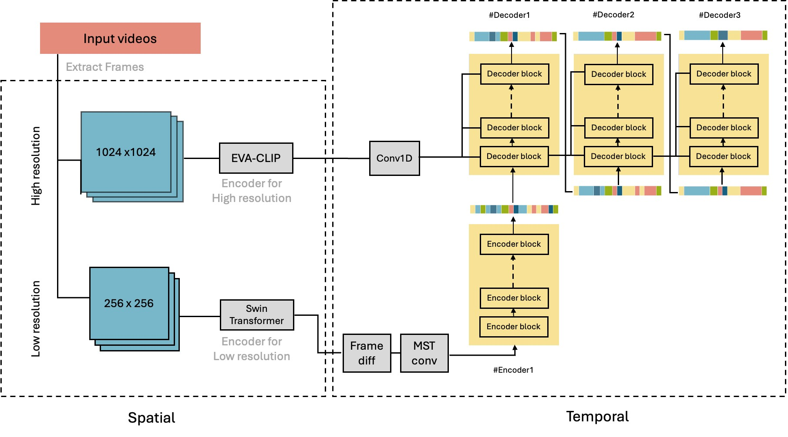
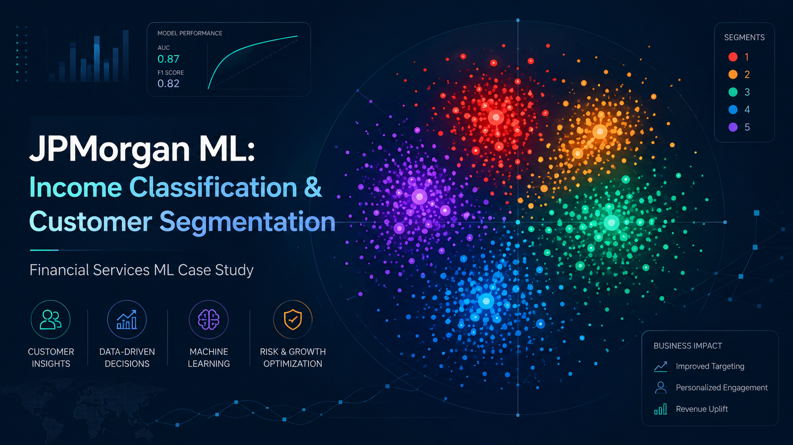
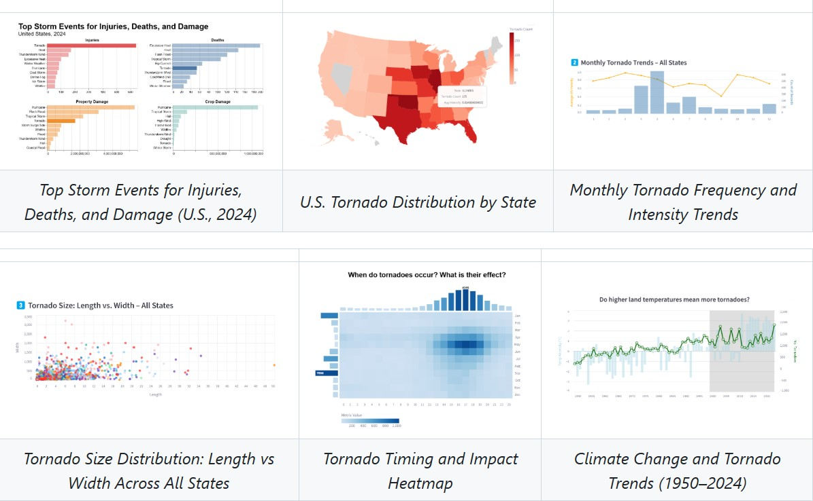
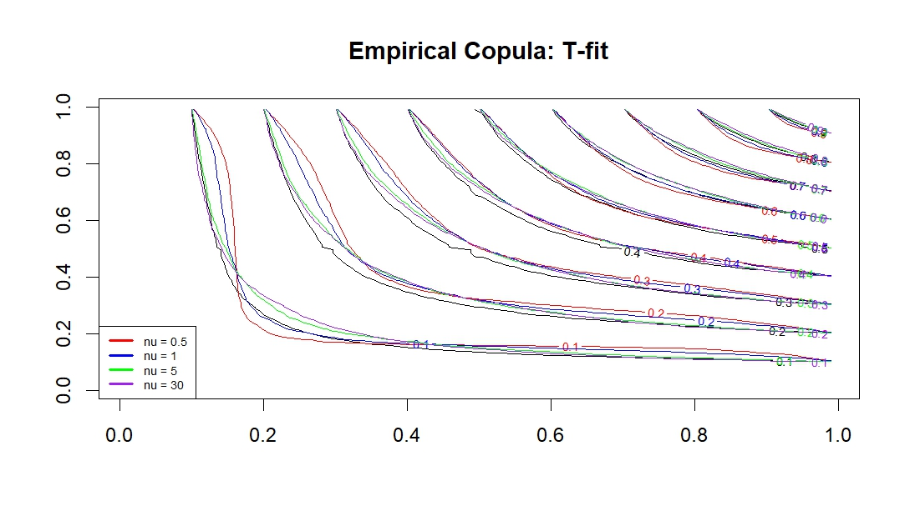
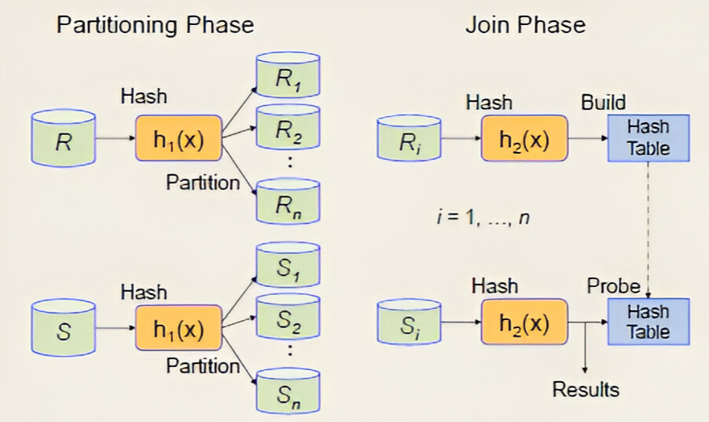

LangGraph multi-agent job tracker
Supervisor + sub-agent workflow automating job tracking, Gmail scanning, JD scraping, cover letter generation, and job match scoring.

GUI-ASFormer: transformer-based GUI video segmentation
Temporal transformer for detecting fine-grained GUI interactions (clicks, scrolls, inputs) in screen recordings. Extended from ASFormer.

JPMorgan ML: income classification & customer segmentation
End-to-end ML pipeline combining income classification and unsupervised customer segmentation for financial services analytics.

Tornado interactive dashboard
Interactive NOAA data explorer for tornado frequency, severity, and economic impact across the US with dynamic filtering.

Robust dependence modeling and copula simulation
Copula functions for non-linear dependency modeling between financial assets, enabling tail-risk analysis and stress testing.

Grace Hash Join implementation
Low-level simulation of Grace Hash Join with disk I/O, buffer pool management, and recursive partitioning under memory constraints.